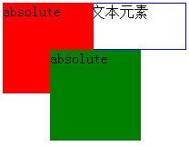

KB012: 绝对定位( Absolute positioning )
绝对定位( Absolute positioning )
之前在介绍定位体系的时候，已经简单的介绍了绝对定位和固定定位。一般情况下，这两种定位的元素， 在 3D 的可视化模型中，处于浮动元素的上方，或者说比浮动元素更靠前1。
参照元素
绝对定位（Absolute positioning）元素定位的参照物是其包含块，既相对于其包含块2进行定位，不一定是其父元素。
示例代码：
<div style="position:relative; width:300px; height:300px; background-color:silver; border:5px solid red;"> <div style="width:100px; height:100px; background-color:blue;"></div> <div style="margin:0 0 0 100px; width:200px; height:200px; background-color:gold;"> <div style="position:absolute; left:100px; top:100px; width:100px; height:100px; background-color:green;"> </div> </div> </div>
示意图：
绝对定位元素完全脱离了常规流
绝对定位元素完全脱离了常规流3（对后继的兄弟节点没有影响）。
常规流中的框，都在同一个层上，浮动框是处于常规流之上的一个特殊层，它可能会对常规流中的框的定位产生影响。但绝对定位的框不会， 每个绝对定位的框都可以看做一个单独的图层，不会对其他层框的定位产生影响。这与层叠级别和层叠上下文1有关。
有一点需要注意，那就是绝对元素定位的 top 和 left 值跟绝对元素未脱离常规流之前在常规流中位置有关。
<div style="position:absolute; width:100px; height:100px; background-color:red;"> absolute</div> <div style="height:50px; border:1px solid blue; width:200px;">DIV 中的普通文本元素</div> <div style="position:absolute; left:60px; width:100px; height:100px; background-color:green;"> absolute</div>
示意图：

两个绝对定位框中间的 DIV 在常规流中，影响了后面的绝对定位元素的位置，但没有受到其前面的绝对定位框的影响。
绝对定位框生成的包含块
一个绝对定位框会为它的常规流子元素和定位子元素(不包含 fiexed 定位的元素)生成一个新的包含块。 不过，绝对定位元素的内容不会在其它框的周围排列。
层叠级别
绝对定位框可能会掩盖另一个框的内容，或者被另外一个框掩盖，这取决于互相重合的框的层叠级别1。
注：
- 具体关于元素的层叠级别和层叠上下文的资料，请参见： W3Help - KB013: 分层的显示( Layered presentation )
- 关于包含块的判定，请参见： W3Help - KB008: 包含块( Containing block )
- 关于常规流，请参见： W3Help - KB009: CSS 定位体系概述
固定定位( Fixed positioning )
固定定位是绝对定位的一个子类。唯一的区别是，对于固定定位框，它的包含块由可视窗口( viewport1 )创建。对于连续媒介，固定定位框并不随着文档的滚动而移动。从这个意义上说，它们类似于固定的背景图形。对于页面媒介，固定定位框在每页里重复。对于需要在每一页底部放置一个签名时，这个方法非常有用。
注意，IE6 中不支持固定定位( Fixed positioning )定位，通常的做法是使用绝对定位代替，并使用 Javascript 脚本控制绝对定位框的位置，使随页面滚动而相应的变化。
以下示例代码是修改自 W3C 官方使用固定定位布局的一个例子：
<!DOCTYPE HTML>
<HTML>
<HEAD><TITLE>A frame document with CSS2.1</TITLE>
<STYLE type="text/css"> BODY {
height: 8.5in
}
div {
border: 1px solid red;
}
/* Required for percentage heights below */
#header {
position: fixed;
width: 100%;
height: 15%;
top: 0;
right: 0;
bottom: auto;
left: 0;
}
#sidebar {
position: fixed;
width: 10em;
height: auto;
top: 15%;
right: auto;
bottom: 100px;
left: 0;
}
#main {
position: fixed;
width: auto;
height: auto;
top: 15%;
right: 0;
bottom: 100px;
left: 10em;
}
#footer {
position: fixed;
width: 100%;
height: 100px;
top: auto;
right: 0;
bottom: 0;
left: 0;
} </STYLE>
</HEAD>
<BODY>
<DIV id="header"> ...</DIV>
<DIV id="sidebar"> ...</DIV>
<DIV id="main"> ...</DIV>
<DIV id="footer"> ...</DIV>
</BODY>
</HTML>
示意图：
无论如何滚动页面，布局区域始终位于可视窗口中。
注：
引申阅读
此部分涉及到的部分兼容性问题，请参见以下 W3Help 中的根本原因文章:
- W3Help - RM8011: Firefox 浏览器对 TABLE 中绝对定位元素包含块的判定有错误，某些情况下会导致绝对定位元素位置跟其他浏览器中有差异
- W3Help - RM8013: IE6 IE7(Q) IE8(Q) 不支持固定定位（position:fixed）
- W3Help - RM8018: IE6 IE7(Q) IE8(Q) 中包含块若未触发 hasLayout 则会影响参照其定位的绝对定位元素的偏移位置计算
测试环境
| 操作系统版本: | Windows 7 Ultimate build 7600 |
|---|---|
| 浏览器版本: |
IE6 IE7 IE8 Firefox 3.6.10 Chrome 7.0.517.0 dev Safari 5.0.2 Opera 10.62 |
| 测试页面: | |
| 本文更新时间: | 2010-09-27 |
关键字
绝对定位 固定定位 absolute fixed